Статичный постер подскажет композицию и цвет, но не ответит, как объект входит в кадр, как держится пауза и как сцена разворачивается во времени. Поэтому в моушне референсы смотрят в нескольких слоях сразу: как выглядит кадр, как двигается, как монтируется и какое ощущение оставляет.
ЗАЧЕМ
Что дают референсы
Хороший референс не заменяет решение, но помогает точнее к нему прийти.
01НаправлениеСпокойный или агрессивный, плотный или воздушный, технологичный или рукотворный
02Визуальный языкТипографика, коллаж, интерфейс, характер анимации
03РитмСколько живёт кадр, как держится темп и саунд-ритм
04РешенияКак работает переход, как анимируется текст, насколько сложна сцена
05ПроверкаСовпадает ли то, что получается, с задуманным характером
ЗАЧЕМ
Плохо и хорошо
Плохо
Бессмысленное копирование или визуальная каша из десяти чужих работ сразу. Папка из сорока роликов, которые ни с чем не помогают.
Хорошо
Несколько точных подборок под конкретные вопросы и разбор, что именно в них работает. Решения быстрее, стиль держится до конца.
ЧАСТЬ 01
Пять принципов
Референс надо уметь переводить с языка впечатления на язык решений
ПРИНЦИП 1
Под конкретную задачу
Не собирай всё красивое на Pinterest. Задай вопрос — чем он точнее, тем полезнее подборка.
?Стиль кадра?
?Переход между сценами?
?Типографика?
?Динамика короткого контента?
?Ритм рекламного ролика?
?Коллажная стилистика?
ПРИНЦИП 2
По слоям задачи
Один ролик нравится из-за монтажа, другой из-за первого кадра, третий из-за цвета, четвёртый из-за текста. Идеального референса почти не бывает: решение собирается из нескольких наблюдений. Главное — не склеивать их механически.
ПРИНЦИП 3
Не собирать, а разбирать
Референс начинает работать, когда ты можешь объяснить, что именно в нём нужно. Впечатление → решение.
«Цепляет с первой секунды»Сильный первый кадробъект сразу крупно, текст встроен в композицию
«На одном дыхании»Ритмсмена планов каждые 1,5–2 секунды
«Классный переход»Переходстроится на форме объекта, а не на эффекте
«Текст прикольно»Текстподдерживает речь спикера
«Стильно»Палитраограничена, поэтому акцент читается сразу
«Чисто и понятно»Иерархияодин доминирующий объект, остальное подчинено
ПРИНЦИП 4
Под задачу, а не под вкус
Не подходит
Сложный коллажный ролик с рваным монтажом как референс для чистого explainer финтех-сервиса. Нравится тебе как зрителю, но уводит проект в сторону.
Фильтр
Этот референс помогает решить именно мою задачу или просто нравится мне как зрителю?
ПРИНЦИП 5
Несколько маленьких подборок
Не один общий мудборд, а подборки по функциям.
01Стильобщий визуальный язык
02Анимация текстапоявления, кинетика
03Переходыкак сцены соединяются
04Монтажтемп, длина планов
05Цветпалитра, контраст
06Атмосферасвет, фактура, звук
ЧАСТЬ 02
Четыре уровня разбора
Разбирай референс по уровням — и он станет рабочим инструментом.
Уровень 1Кадркомпозиция, иерархия, цвет, плотность, форма, типографика
Уровень 2Анимация внутри кадраплавно, резко, упруго, с инерцией, через маску или трансформацию
Уровень 3Монтаж и ритмсколько живёт план, где пауза и ускорение, как работает музыка
Уровень 4Общее ощущениесобранный, нервный, премиальный, ироничный, спокойный
РАЗБОР ПО СЛОЯМ
Любой кадр — это слои
Пример из клипа «Хаски»: кадр из нейросети, строчка трека, вырезанный ротоскопом герой и общий цвет с зерном. Глядя на чужой ролик, раскладывай его так же — и становится понятно, что именно забирать.
01 Кадр из нейросети
02 Типографика между фоном и героем
03 Ротоскоп героя
04 Цвет и зерно — ч/б, красными остаются только титры
Клик по кадру — разобрать / собрать
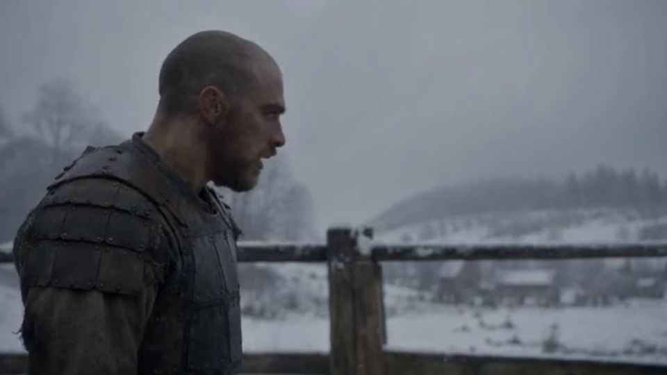
01 Кадр из нейросети
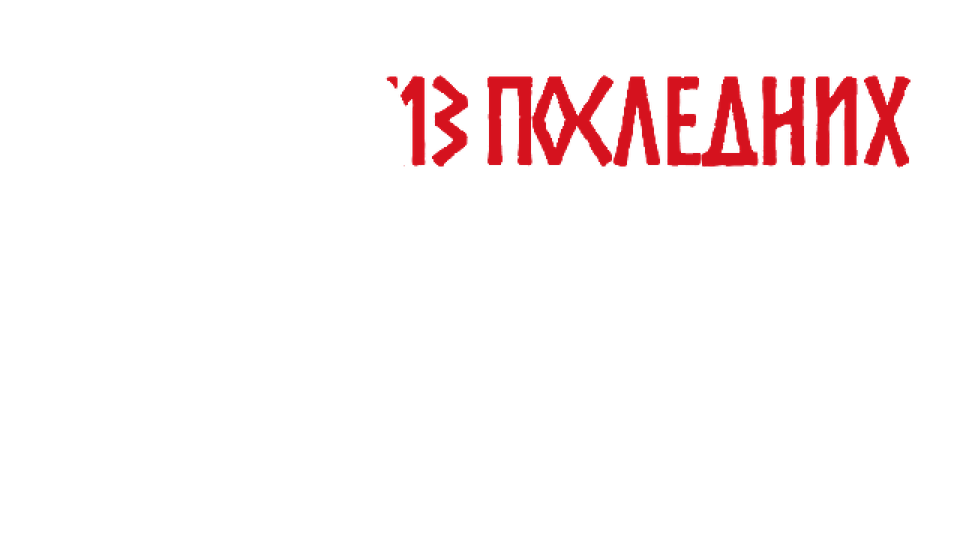
02 Типографика
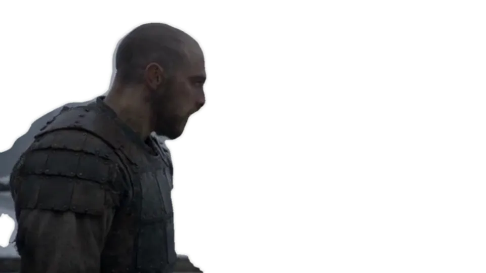
03 Ротоскоп героя
04 Цвет и зерно
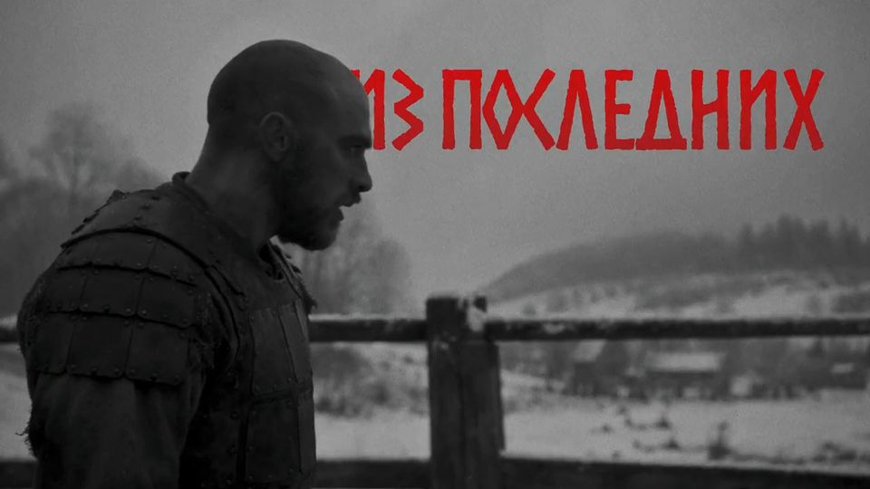
ЧАСТЬ 03
На что смотреть
Нет задачи двигать всё. Цель — движением передать ключевую идею и эмоцию
НА ЧТО СМОТРЕТЬ
Первый кадр
Первый кадр задаёт ожидание от всего ролика. Слабое начало может не зацепить, даже если дальше всё хорошо.
Референс
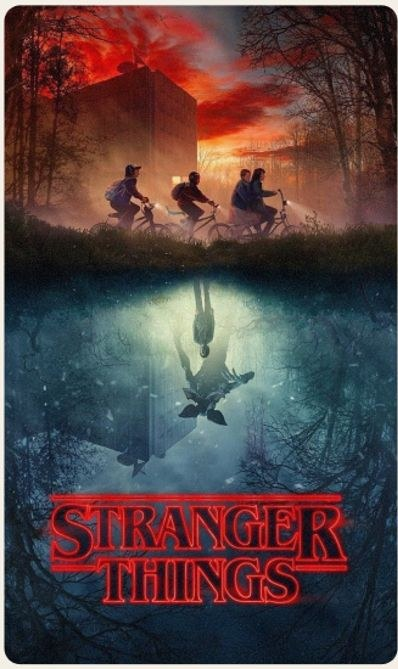
Наша реализация
Что зритель видит в первую секунду
Есть ли сильный визуальный акцент
Хочется ли смотреть дальше
НА ЧТО СМОТРЕТЬ
Кадр в статике
Даже на паузе кадр должен быть понятно устроен.
Референс
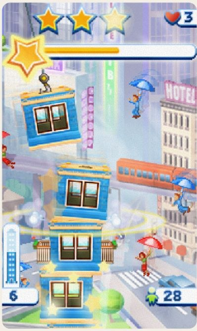
Наша реализация
Композиция и иерархия
Цвет и плотность
Форма и типографика
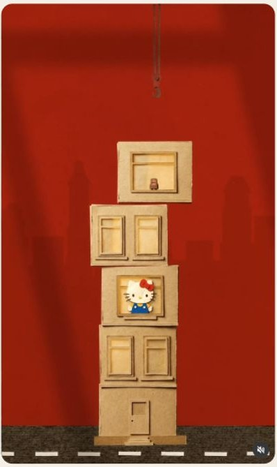
НА ЧТО СМОТРЕТЬ
Анимация внутри кадра
Как объект ведёт себя во времени.
Референс
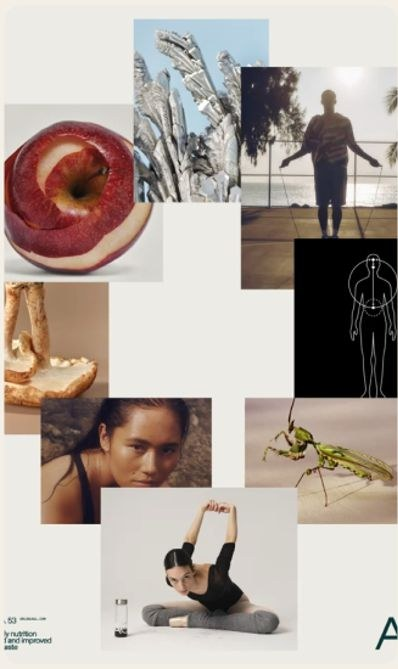
Наша реализация
Плавно, резко или упруго
Механически или с инерцией
Через маску или трансформацию
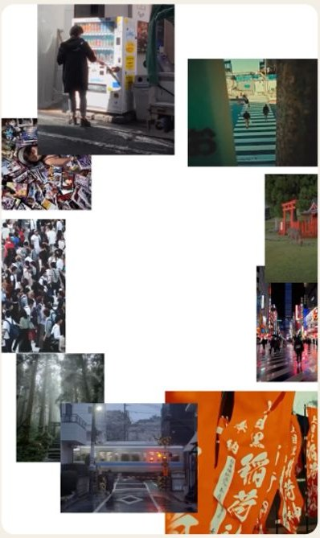
НА ЧТО СМОТРЕТЬ
Монтаж, ритм и крупности
Монтаж задаёт темп и управляет вниманием: приближает, отдаляет, переключает на текст или деталь.
Референс
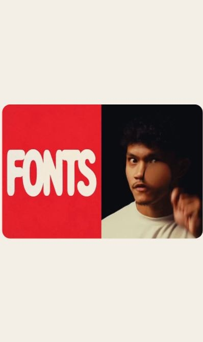
Наша реализация
Сколько живёт каждый кадр
Как чередуются крупности
Совпадает ли с музыкой или голосом
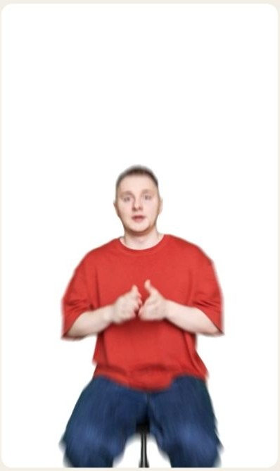
НА ЧТО СМОТРЕТЬ
Текст
Текст — часть композиции, а не функция: герой, ритмический акцент или поддержка речи.
Референс
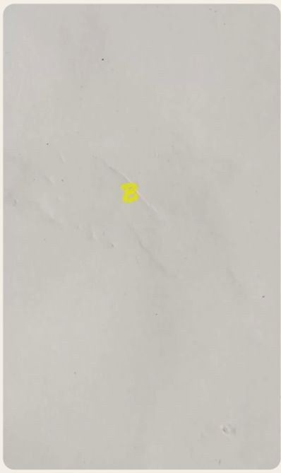
Наша реализация
Где расположен и когда появляется
Поддерживает ли смысл сцены
Не спорит ли с визуалом
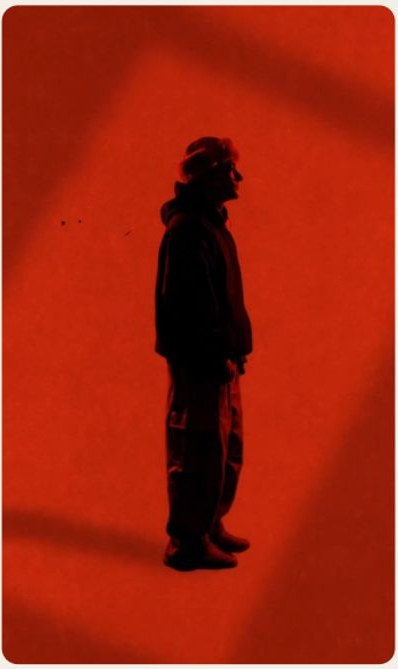
НА ЧТО СМОТРЕТЬ
Звук
Даже простое движение кажется профессиональнее, если точно попадает в музыку или голос.
Референс
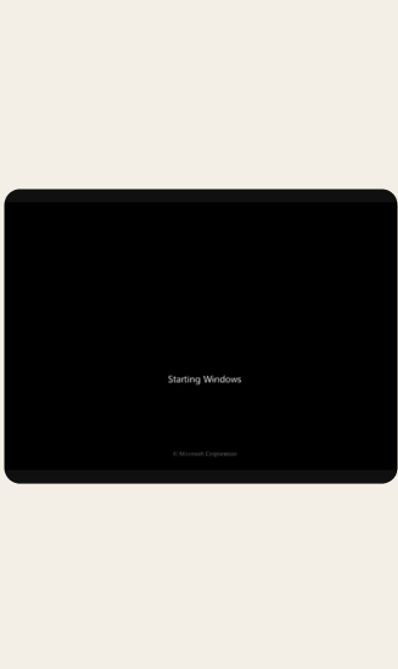
Наша реализация
Попадает ли движение в бит
Поддерживает ли звук переходы
Есть ли паузы и акценты
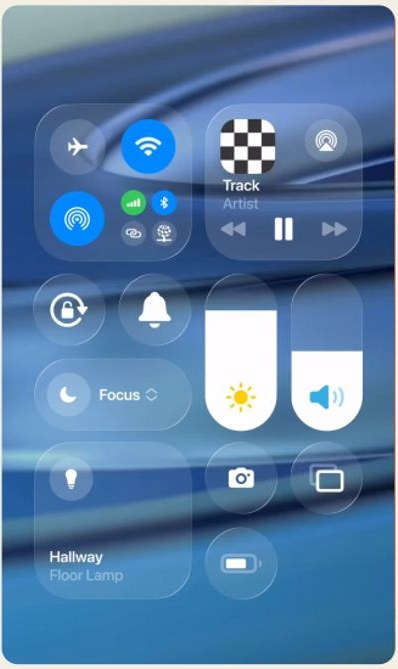
НА ЧТО СМОТРЕТЬ
Дизайн и движение
Смотрим
Не перегружен ли кадр, хватает ли воздуха. Помогает движение или мешает. Есть ли главный акцент.
Баланс
Иногда кадр красиво нарисован, но плохо двигается. Иногда анимации так много, что непонятно, куда смотреть. Что статично, что движется, где главное?
РАЗБОРЫ
От референса к ролику
Что мы взяли из референса и во что это превратилось
РАЗБОР · СТИЛЬ
Стиль
Коллаж из гравюр, архивных фото и аккуратной сетки — и свой ролик в той же системе.
Взяли: коллаж из гравюр · сетку · один акцентный цвет
Референс
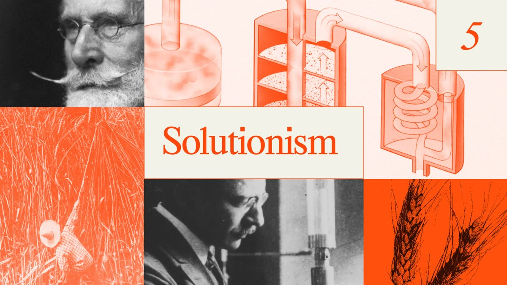
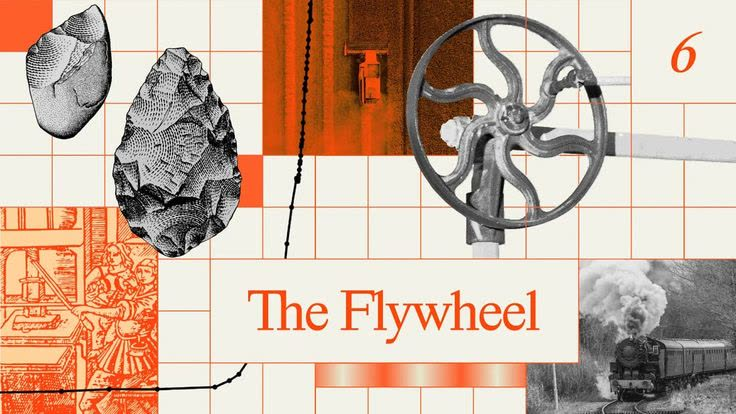
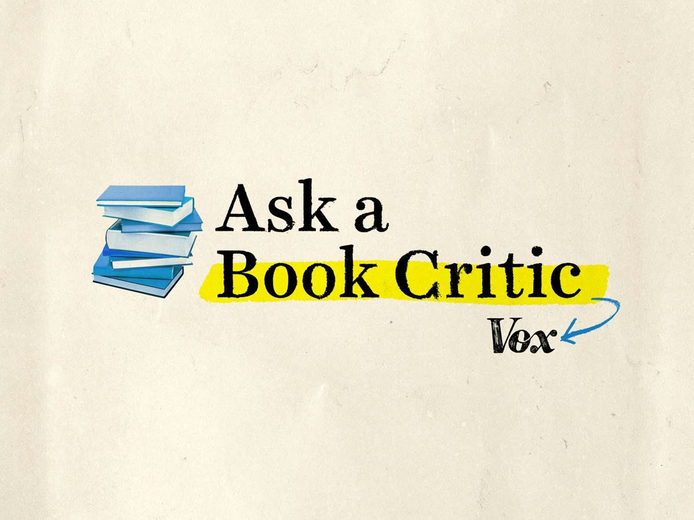
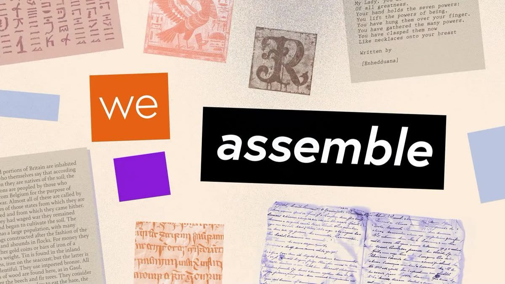
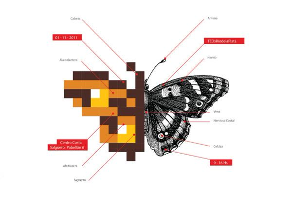
Наша реализация
Берём систему, а не картинку: архивные вырезки + один акцентный цвет + сетка + шрифт с засечками
Палитру адаптируем под себя: красный и светлый фон вместо оранжевого
Стиль держится весь ролик, даже в кадрах со спикером
РАЗБОР · АНИМАЦИЯ ТЕКСТА
Анимация текста
Слово в строке «вздрагивает» и подменяется пиктограммой.
Взяли: механику подмены слова иконкой
Референс
Наша реализация
Механика: часть слова на секунду превращается в иконку и возвращается
Перенесли на русский текст и свою тему
Тайминг короче, чтобы не мешать чтению
РАЗБОР · ПЕРЕХОДЫ
Переходы
Глитч из текста и цифрового шума превратился в «загрузку» картинки на старом мониторе.
Взяли: смену через цифровой сбой
Референс
Наша реализация
Принцип: смена кадра через цифровой сбой
Привязали к смыслу: AI «дорисовывает» картинку — ч/б становится цветным
Переход работает на мысль, а не ради эффекта
РАЗБОР · МОНТАЖ
Монтаж
Предметная съёмка, руки, крупные планы, текст встроен в кадр.
Взяли: темп · смену крупностей · текст на предметах
Референс
Наша реализация
Чередование крупностей: общий → деталь руки → интерфейс
Слова появляются прямо на предметах
Темп задаёт музыка, склейки в доли
РАЗБОР · ЦВЕТ
Цвет · «Пропаганда»
Из коллажей взяли не картинки, а палитру: два насыщенных цвета и чёрно-белые вырезки.
Взяли: палитрукрасныйсинийчёрныйч/б вырезки
Референс
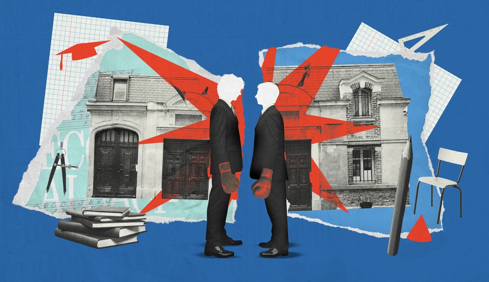
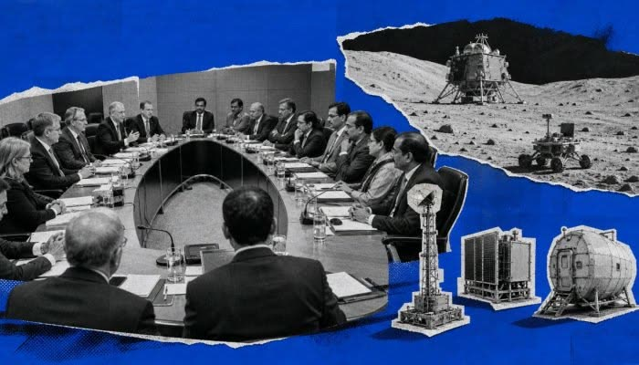
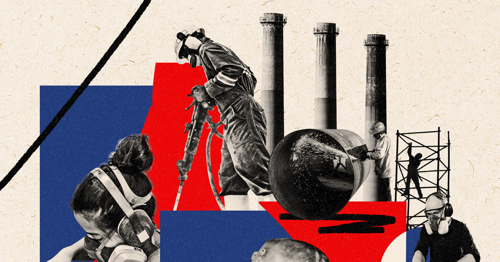
Наша реализация
Красный и синий — только плашки и акценты, всё остальное ч/б
Ограниченная палитра делает серию узнаваемой
Цвет несёт смысл: красный — тревога и акцент
РАЗБОР · ЦВЕТ
Цвет · «Хватит сохранять туториалы»
Та же логика палитры в другом ролике: красный фон, ч/б фото, светлая бумага.
Взяли: палитрукрасныйсинийчёрныйч/б вырезки
Референс
Наша реализация
Красный фон + чёрно-белые вырезки людей и предметов
Светлая бумажная фактура как пауза между красными сценами
Палитра стала частью айдентики канала
РАЗБОР · АТМОСФЕРА
Атмосфера · Eaglips
Тёплые кадры с бумагой, предметами и мягким светом — ощущение «сделано руками».
Взяли: тёплый свет · бумагу и скетчи · медленный темп
Референс
Наша реализация
Атмосфера — свет, фактура и темп, а не конкретные кадры
Скетчи и предметная съёмка работают на одно настроение
Паузы и звук тоже часть атмосферы
РАЗБОР · АТМОСФЕРА
Атмосфера · Totem
То же настроение в ролике про продукт: эскизы, тёплый интерьер, предметы крупно.
Взяли: тёплый свет · бумагу и скетчи · медленный темп
Референс
Наша реализация
Чертёж → объект: процесс показан как часть атмосферы
Тёплый свет и дерево в кадре со спикером
Мягкие переходы, без резкого монтажа
РАЗБОР · АНИМАЦИЯ ВНУТРИ КАДРА
Анимация внутри кадра · 1/4
Коллаж слой за слоем. Элементы появляются по очереди и строят кадр.
Взяли: слои коллажа
Референс
Наша реализация
Смотрим, как ведёт себя объект во времени
Берём характер движения, а не картинку
Движение объясняет мысль кадра
РАЗБОР · АНИМАЦИЯ ВНУТРИ КАДРА
Анимация внутри кадра · 2/4
Разлёт вокруг героя. Объекты закручиваются вокруг центра и разлетаются.
Взяли: движение по кругу
Референс
Наша реализация
Смотрим, как ведёт себя объект во времени
Берём характер движения, а не картинку
Движение объясняет мысль кадра
РАЗБОР · АНИМАЦИЯ ВНУТРИ КАДРА
Анимация внутри кадра · 3/4
Пиксельная пересборка. Объект пересобирается по шагам, как в референсе.
Взяли: пиксельную анимацию
Референс
Наша реализация
Смотрим, как ведёт себя объект во времени
Берём характер движения, а не картинку
Движение объясняет мысль кадра
РАЗБОР · АНИМАЦИЯ ВНУТРИ КАДРА
Анимация внутри кадра · 4/4
Предметы сменяют друг друга. Вещи летят и сменяются — «расцвет технологий».
Взяли: разлёт предметов
Референс
Наша реализация
Смотрим, как ведёт себя объект во времени
Берём характер движения, а не картинку
Движение объясняет мысль кадра
РАЗБОР · ЗВУК
Звук
Звук ведёт монтаж: каждое слово и движение попадает в музыку. Включи звук на обоих роликах.
Взяли: синхрон текста и звука
Референс
Наша реализация
Слова появляются точно в такт
Звук подсказывает смысл и паузы
Сначала послушай референс, потом наш ролик
РАЗБОР · КАДР
Кадр · «Баг»
Сгенерированные кадры-референсы: комната с ретро-монитором и тёплый свет.
Взяли: композицию · свет · ретро-монитор
Референс
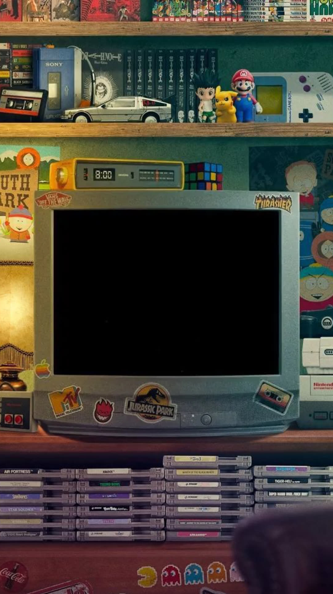
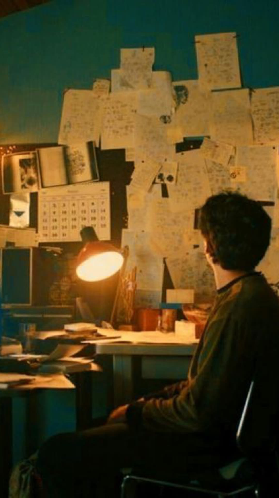
Наша реализация
Референс задаёт композицию и свет
Дорабатываем и анимируем: ERROR на экране
Текст встроен в кадр: «БАГ»
РАЗБОР · КАДР
Кадр · «Круг переотребления»
Воронка из экранов стала метафорой бесконечного потока референсов.
Взяли: образ воронки
Референс
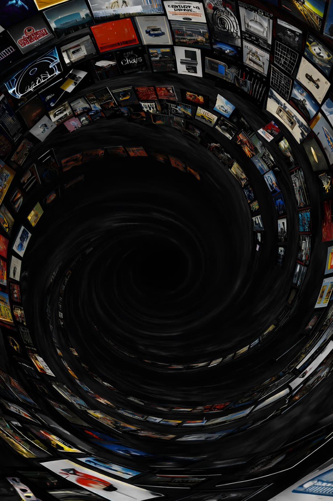
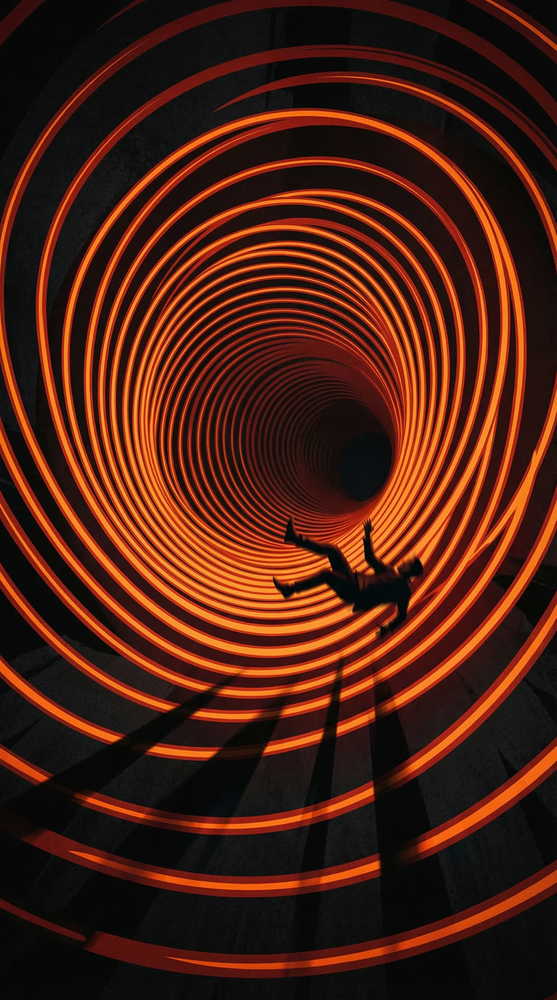
Наша реализация
Образ подставлен по смыслу: воронка = бесконечный круг
Герой падает внутрь — сюжет из одной картинки
Текст: «УВЛЕКАТЕЛЬНО», «ПЕРЕПОТРЕБЛЕНИЕ»
ЧАСТЬ 04
Как не скатиться в копирование
Не бери референс как готовое решение. Бери его как принцип
БЕЗ КОПИРОВАНИЯ
Перевернуть желание
Вопрос к каждому референсу: что я беру — приём, структуру, ритм или механику?
Копия → принцип«Хочу повторить этот кадр»→ хочу понять, почему этот кадр работает
Копия → принцип«Хочу такой же переход»→ за счёт чего он ощущается естественно
Копия → принцип«Хочу эту палитру один в один»→ как устроен контраст и почему акцент читается
СМЫСЛ
Картинка ничего не стоит — смысл стоит
Красивая картинка с Pinterest сама по себе — просто обои: таких тысячи, и зритель пролистает её за секунду. Ценность появляется, когда ты подставляешь её под мысль сценария. Ищи не «красивое», а то, что может нести смысл твоей фразы.
СМЫСЛ
Пиксельная лавка → продажи
Было: уютная лавка из RPG. Стало: «Поучись навыкам продаж у торговцев».
Слева сюжет из картинки игры, справа — из превью роликов
Пример 1
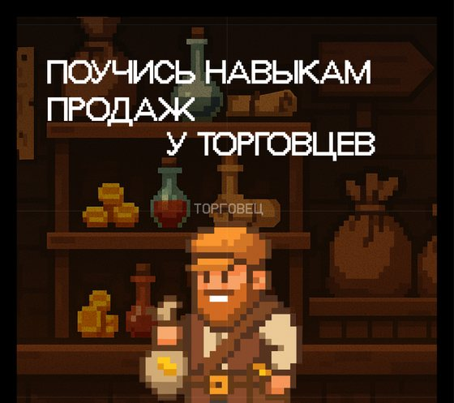
Пример 2
Игровой торговец — метафора продаж через знакомую механику
Справа: голова как переполненное хранилище — «Хватит сохранять туториалы»
Картинка работает, потому что подставлена под мысль
«У меня должен получиться ролик с плотным началом, быстрым монтажом, крупной типографикой, ограниченной палитрой, спокойным финалом и акцентом на продукт». Не получается — анализа пока не произошло.
ПЕРЕСБОРКА
Пересборка как упражнение
Можно
Взять фрагмент ролика и разобрать, из чего он собран: слои, переходы, тайминг. Отлично качает насмотренность.
Нельзя
Публиковать пересборку как итоговую работу или выдавать за авторское решение. Честно называй это разбором.
ЧАСТЬ 05
Процесс
01Определить задачучто решаешь в проекте
02Найти под вопросыне вообще, а под конкретный вопрос
03Разделить по функциямстиль, текст, переходы, монтаж, цвет
04Разобратьчто работает и почему
05Перевести принципыв свой проект, без внешней оболочки
ГДЕ ИСКАТЬ
Где искать
01Моушн и графикаBehance, Vimeo, Pinterest, Instagram, TikTok, сайты студий
02Кадры из киноflim.ai, frameset.app, film-grab.com
03Реклама и клипыYouTube, каналы брендов, фестивали
04Своя библиотекаподборки по функциям с подписью, зачем сохранил
ИТОГ
Что я беру?
Приём · структуру · ритм · механику — а не картинку